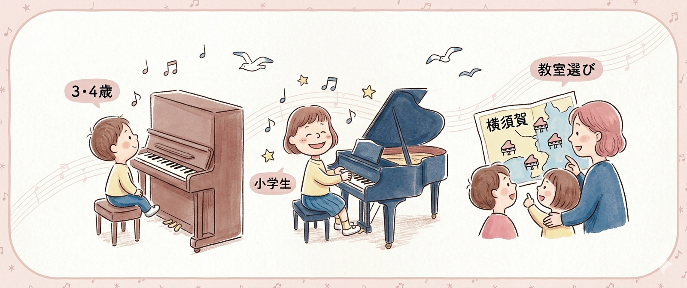

ピアノを始める前に読みたいコラム
ピアノ教室コラム一覧
ピアノは何歳から始める？ 教室選びはどう考える？ 練習しないときはどうする？ はじめての習いごとや教室選びで迷ったときに役立つ記事をまとめています。
「何歳から始めるのがよいのか知りたい方」は年齢別ガイドから、 「どんな教室を選べばよいか迷っている方」は教室選びの記事から読むと整理しやすくなります。
年齢別の始め方
ピアノはいつから？4歳から始めるメリット
4歳からピアノを始めるメリットを、音感・集中力・自己表現・成功体験の視点からわかりやすく解説します。
記事を読む 年齢別ガイド3歳でピアノは早い？始める前に知っておきたいこと
3歳スタートが向いているケースと、まだ早い場合の考え方をやさしく整理しています。
記事を読む 年齢別ガイド小学生からピアノを始めるのは遅い？
小学生から始めるメリットや、理解力を活かして無理なく続けるポイントを解説します。
記事を読む教室選びのポイント
横須賀市でピアノ教室の選び方｜個人教室と大手の違い
横須賀市でピアノ教室を探している保護者の方へ。個人教室と大手教室の違いや、失敗しにくい選び方を解説します。
記事を読む保護者のよくある悩み
ピアノを習っても練習しない子はどうする？続く教室の特徴
練習しない理由や、家庭での関わり方、続きやすい教室の特徴を保護者向けに整理しています。
記事を読む地域で教室を探す方へ
馬堀海岸・浦賀エリアでピアノ教室を探している方へ
馬堀海岸・浦賀エリアで、通いやすく続けやすいピアノ教室を探すポイントをご紹介します。
記事を読む- 横須賀市で4歳から通えるピアノ教室を探している
- 子どもに合う教室の選び方を知りたい
- 練習しないときの関わり方に悩んでいる
- 馬堀海岸・浦賀周辺で通いやすい教室を探している
無料体験レッスン受付中
教室の雰囲気や先生との相性が気になる方は、まずは体験レッスンでご確認ください。
体験後に入会するかどうかは自由です。無理な勧誘はありません。